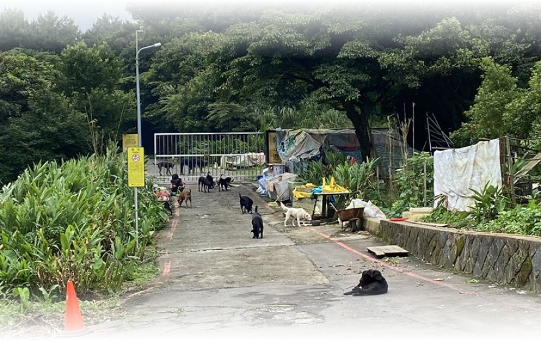
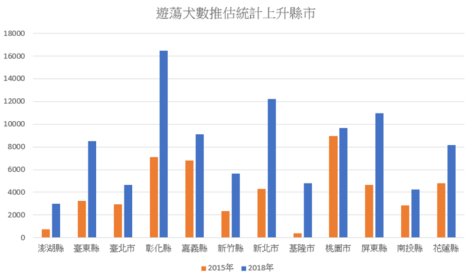
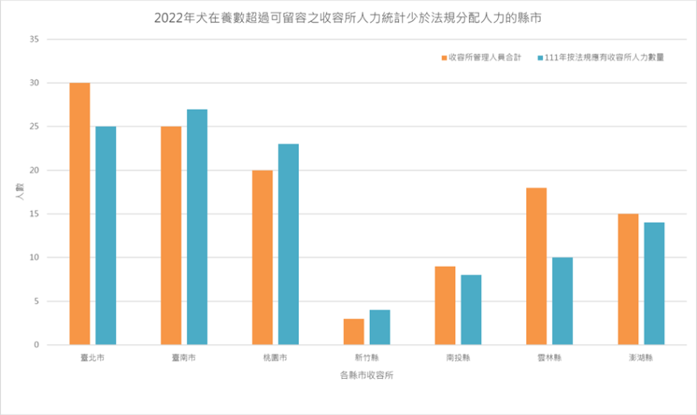
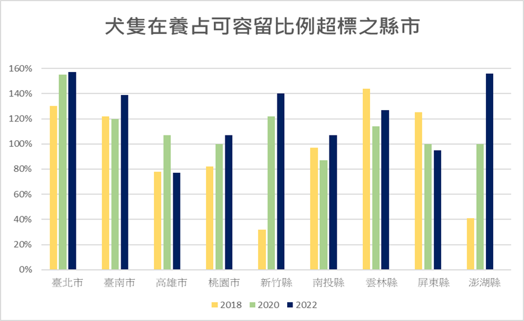

陽明山遊蕩犬危機
陽明山國家公園蘊含豐富的自然生態，負有保育北臺灣中低海拔自然環境的重任。但由於數量龐大的遊蕩犬族群，已對園區內的自然生態與公共衛生造成負面影響，尤其對野生動物更是產生嚴重的負面衝擊(Vanak and Gompper 2009)，其影響方式包括直接獵捕、競爭資源、傳播疾病、雜交…等(Yamaguchi et al. 2004; Silva-Rodríguez and Sieving 2012; Soto and Palomares 2015)。

威脅1 獵捕攻擊
遊蕩犬大多會集結成群並且結成狗群後狩獵能力會大幅上升，據環境資訊中心表示，連體型比牠們大得多的梅花鹿都獵捕得到。根據109-110年度陽明山國家公園流浪動物族群現況調查報告，自由活動犬隻是麝香貓族群之潛在威脅，且2012-2014年間記錄到3筆麝香貓疑似受犬隻攻擊致死的案例。
疑似遭野犬咬死的保育類動物麝香貓。圖片來源：陽明山國家公園管理處。
威脅2 空間競爭
陽明國家公園佔地面積113.4平方公里，公園境內生物多樣態。根據調查報告，在2019年進一步利用自動相機長期監測資料，透過群落階層的占據度模式(community-level occupancy model)，了解遊蕩犬貓對野生哺乳類群活動的影響，結果顯示狗的出沒會導致野生哺乳動物之物種豐富度與出現機率下降，並且影響野生哺乳動物的出沒時間。
威脅3疾病傳染
遊蕩犬增加，野生動物與遊蕩動物的交集也隨之增加，這也意味著疾病的傳染風險也隨之增加。顏士清等(2018， 2019)於陽明山區採集的狗、白鼻心與鼬獾血液樣本中，三種動物都有呈現焦蟲感染陽性反應的個體。據推測，可能是藉由共通的外寄生蟲所傳染。長期下來，整個族群的健康狀況與繁衍存續都將面臨威脅。
"流浪動物會形成這麼大的族群，正是因為有人固定在餵食，使牠們的食物來源遠大於從自然環境中得到的食物。" ——台北市動保處 賴佳倩
遊蕩犬的容身之處？
隨著2017年廢除流浪動物安樂死之法案上路，遊蕩犬的數量可說是逐年攀升。在2020年，全國遊蕩犬數推估為115,869隻。由政府資料開放平台所提供之量表，我們不難發現全國縣市遊蕩犬數量在2017年廢除安樂死法案之後，呈現大幅上升的趨勢。
資料來源:政府資料開放平台-年度犬貓統計表
由公開資料統計之圖表發現，在2018到2020年間，有眾多縣市出現了犬隻在養占可容留比例超標的情形。一旦逼近100%或超過，亦即過度密集飼養，這將會對動物造成痛苦以及損害動物福利。
資料來源:政府資料開放平台-全國公立動物收容所收容處理情形統計表
此外，我們可以透過以下統計圖表發現在過度密集飼養的收容所裡有人力分配不足的情形。
各縣市動物收容所人力分析 由全國動物收容所處理資料和《動物收容處所設置組織準則》推估
數量龐大之遊蕩犬、遭遊蕩犬攻擊之野生動物、不當餵食增加遊蕩犬數目的民眾等等，這些都是刻不容緩的問題。為了解決上述問題，故推出「動物數據共存平台」，成為野生動物與遊蕩動物的守護平台。